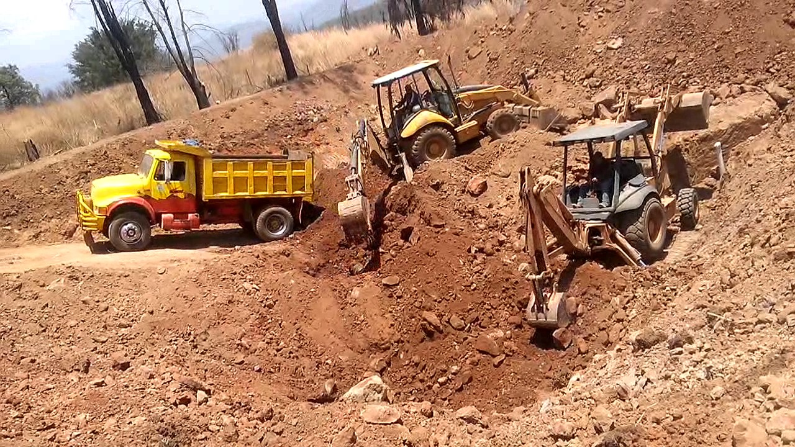
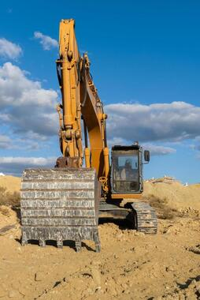

Los movimientos de tierras y excavaciones son los trabajos previos
que se realizan en el terreno antes de la ejecución de una obra.
Son necesarios en todo proyecto de cimentación, explanación de
terrenos y obra civil.

EXCAVACIONES PROFUNDAS
Las excavaciones profundas son trabajos muy especializados que se
realizan en el subsuelo para construir túneles o para maximizar el
espacio en zonas urbanas. No todas las máquinas son aptas para
este tipo de excavaciones

MUROS DE ROCALLA
Los muros de piedra son perfectos cuando se busca un método
eficaz, estético y económico para la contención de tierras. La
piedra es un material natural de gran belleza que se integra en el
paisaje consiguiendo una protección de gran belleza.
«En EXCAVATOR PRO S.L Trabajamos Cada Día Para Ofrecer A Nuestros
Clientes El Mejor Servicio»